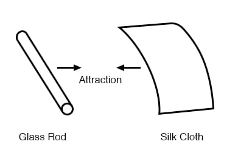
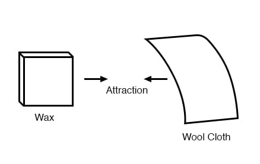
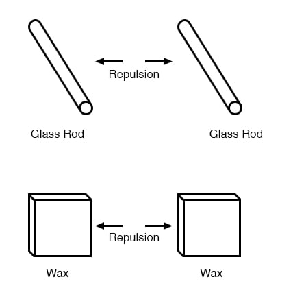
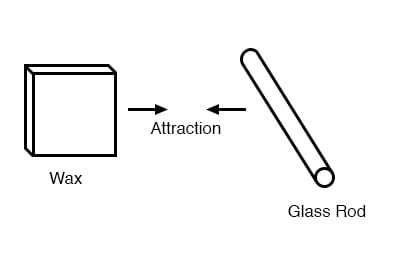
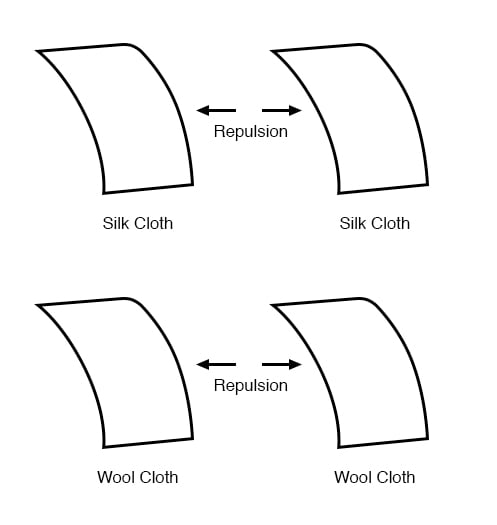
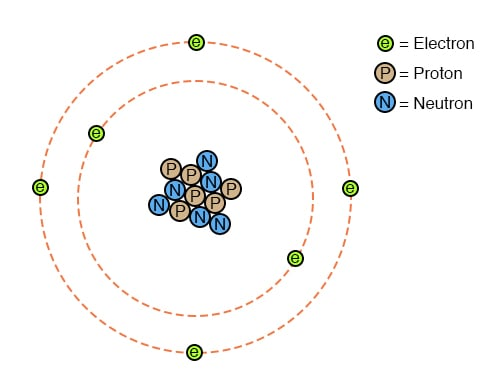

It was discovered centuries ago that certain types of materials would mysteriously attract one another after being rubbed together. For example, after rubbing a piece of silk against a piece of glass, the silk and glass would tend to stick together. Indeed, there was an attractive force that could be demonstrated even when the two materials were separated:

Glass and silk aren’t the only materials known to behave like this. Anyone who has ever brushed up against a latex balloon only to find that it tries to stick to them has experienced this same phenomenon. Paraffin wax and wool cloth are another pair of materials early experimenters recognized as manifesting attractive forces after being rubbed together:

This phenomenon became even more interesting when it was discovered that identical materials, after having been rubbed with their respective cloths, always repelled each other:

It was also noted that when a piece of glass rubbed with silk was exposed to a piece of wax rubbed with wool, the two materials would attract one another:

Furthermore, it was found that any material demonstrating properties of attraction or repulsion after being rubbed could be classed into one of two distinct categories: attracted to glass and repelled by wax, or repelled by glass and attracted to wax. It was either one or the other: there were no materials found that would be attracted to or repelled by both glass and wax, or that reacted to one without reacting to the other.
More attention was directed toward the pieces of cloth used to do the rubbing. It was discovered that after rubbing two pieces of glass with two pieces of silk cloth, not only did the glass pieces repel each other but so did the cloths. The same phenomenon held for the pieces of wool used to rub the wax:

Now, this was really strange to witness. After all, none of these objects were visibly altered by the rubbing, yet they definitely behaved differently than before they were rubbed. Whatever change took place to make these materials attract or repel one another was invisible.
Some experimenters speculated that invisible “fluids” were being transferred from one object to another during the process of rubbing and that these “fluids” were able to effect a physical force over a distance. Charles Dufay was one of the early experimenters who demonstrated that there were definitely two different types of changes wrought by rubbing certain pairs of objects together. The fact that there was more than one type of change manifested in these materials was evident by the fact that there were two types of forces produced: attraction and repulsion. The hypothetical fluid transfer became known as a charge.
One pioneering researcher, Benjamin Franklin, came to the conclusion that there was only one fluid exchanged between rubbed objects, and that the two different “charges” were nothing more than either an excess or a deficiency of that one fluid. After experimenting with wax and wool, Franklin suggested that the coarse wool removed some of this invisible fluid from the smooth wax, causing an excess of fluid on the wool and a deficiency of fluid on the wax. The resulting disparity in fluid content between the wool and wax would then cause an attractive force, as the fluid tried to regain its former balance between the two materials.
Postulating the existence of a single “fluid” that was either gained or lost through rubbing accounted best for the observed behavior: that all these materials fell neatly into one of two categories when rubbed, and most importantly, that the two active materials rubbed against each other always fell into opposing categories as evidenced by their invariable attraction to one another. In other words, there was never a time where two materials rubbed against each other both became either positive or negative.
Following Franklin’s speculation of the wool rubbing something off of the wax, the type of charge that was associated with rubbed wax became known as “negative” (because it was supposed to have a deficiency of fluid) while the type of charge associated with the rubbing wool became known as “positive” (because it was supposed to have an excess of fluid). Little did he know that his innocent conjecture would cause much confusion for students of electricity in the future!
Precise measurements of electrical charge were carried out by the French physicist Charles Coulomb in the 1780s using a device called a torsional balance measuring the force generated between two electrically charged objects. The results of Coulomb’s work led to the development of a unit of electrical charge named in his honor, the coulomb. If two “point” objects (hypothetical objects having no appreciable surface area) were equally charged to a measure of 1 coulomb, and placed 1 meter (approximately 1 yard) apart, they would generate a force of about 9 billion newtons (approximately 2 billion pounds), either attracting or repelling depending on the types of charges involved. The operational definition of a coulomb as the unit of electrical charge (in terms of force generated between point charges) was found to be equal to an excess or deficiency of about 6,250,000,000,000,000,000 electrons. Or, stated in reverse terms, one electron has a charge of about 0.00000000000000000016 coulombs. Being that one electron is the smallest known carrier of electric charge, this last figure of charge for the electron is defined as the elementary charge.
It was discovered much later that this “fluid” was actually composed of extremely small bits of matter called electrons, so named in honor of the ancient Greek word for amber: another material exhibiting charged properties when rubbed with cloth.
Experimentation has since revealed that all objects are composed of extremely small “building-blocks” known as atoms and that these atoms are in turn composed of smaller components known as particles. The three fundamental particles comprising most atoms are called protons, neutrons and electrons. Whilst the majority of atoms have a combination of protons, neutrons, and electrons, not all atoms have neutrons; an example is the protium isotope (1H1) of hydrogen (Hydrogen-1) which is the lightest and most common form of hydrogen which only has one proton and one electron. Atoms are far too small to be seen, but if we could look at one, it might appear something like this:

Even though each atom in a piece of material tends to hold together as a unit, there’s actually a lot of empty space between the electrons and the cluster of protons and neutrons residing in the middle.
This crude model is that of the element carbon, with six protons, six neutrons, and six electrons. In any atom, the protons and neutrons are very tightly bound together, which is an important quality. The tightly-bound clump of protons and neutrons in the center of the atom is called the nucleus, and the number of protons in an atom’s nucleus determines its elemental identity: change the number of protons in an atom’s nucleus, and you change the type of atom that it is. In fact, if you could remove three protons from the nucleus of an atom of lead, you will have achieved the old alchemists’ dream of producing an atom of gold! The tight binding of protons in the nucleus is responsible for the stable identity of chemical elements, and the failure of alchemists to achieve their dream.
Neutrons are much less influential on the chemical character and identity of an atom than protons, although they are just as hard to add to or remove from the nucleus, being so tightly bound. If neutrons are added or gained, the atom will still retain the same chemical identity, but its mass will change slightly and it may acquire strange nuclear properties such as radioactivity.
However, electrons have significantly more freedom to move around in an atom than either protons or neutrons. In fact, they can be knocked out of their respective positions (even leaving the atom entirely!) by far less energy than what it takes to dislodge particles in the nucleus. If this happens, the atom still retains its chemical identity, but an important imbalance occurs. Electrons and protons are unique in the fact that they are attracted to one another over a distance. It is this attraction over distance which causes the attraction between rubbed objects, where electrons are moved away from their original atoms to reside around atoms of another object.
Electrons tend to repel other electrons over a distance, as do protons with other protons. The only reason protons bind together in the nucleus of an atom is because of a much stronger force called the strong nuclear force which has effect only under very short distances. Because of this attraction/repulsion behavior between individual particles, electrons and protons are said to have opposite electric charges. That is, each electron has a negative charge, and each proton a positive charge. In equal numbers within an atom, they counteract each other’s presence so that the net charge within the atom is zero. This is why the picture of a carbon atom has six electrons: to balance out the electric charge of the six protons in the nucleus. If electrons leave or extra electrons arrive, the atom’s net electric charge will be imbalanced, leaving the atom “charged” as a whole, causing it to interact with charged particles and other charged atoms nearby. Neutrons are neither attracted to or repelled by electrons, protons, or even other neutrons and are consequently categorized as having no charge at all.
The process of electrons arriving or leaving is exactly what happens when certain combinations of materials are rubbed together: electrons from the atoms of one material are forced by the rubbing to leave their respective atoms and transfer over to the atoms of the other material. In other words, electrons comprise the “fluid” hypothesized by Benjamin Franklin.
The result of an imbalance of this “fluid” (electrons) between objects is called static electricity. It is called “static” because the displaced electrons tend to remain stationary after being moved from one insulating material to another. In the case of wax and wool, it was determined through further experimentation that electrons in the wool actually transferred to the atoms in the wax, which is exactly opposite of Franklin’s conjecture! In honor of Franklin’s designation of the wax’s charge being “negative” and the wool’s charge being “positive,” electrons are said to have a “negative” charging influence. Thus, an object whose atoms have received a surplus of electrons is said to be negatively charged, while an object whose atoms are lacking electrons is said to be positively charged, as confusing as these designations may seem. By the time the true nature of electric “fluid” was discovered, Franklin’s nomenclature of electric charge was too well established to be easily changed, and so it remains to this day.
Michael Faraday proved (1832) that static electricity was the same as that produced by a battery or a generator. Static electricity is, for the most part, a nuisance. Black powder and smokeless powder have graphite added to prevent ignition due to static electricity. It causes damage to sensitive semiconductor circuitry. While it is possible to produce motors powered by high voltage and low current characteristics of static electricity, this is not economic. The few practical applications of static electricity include xerographic printing, the electrostatic air filter, and the high voltage Van de Graaff generator.
REVIEW: